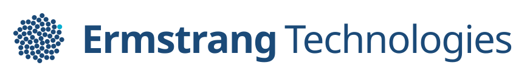

Merkblad
Alles wat je nodig hebt om Ermstrang Technologies herkenbaar te houden: logo's, kleuren, letters, de toon — en hoe je de naam zelf aanpast. Dit is de bron; wijkt een uiting af, pas de uiting aan, niet dit blad.
Logo
Het merkteken is een bol van puntjes in de merktint #1B4A78, gerangschikt volgens de gulden hoek — het netwerk dat voor je werkt. Eén puntje is cyaan: precies de stap die de assistent doet. Dat is dezelfde betekenis als het cyaan in het werkblad en het vinkje op de site. De naam staat ernaast in Archivo: Ermstrang vet, Technologies licht, op één regel.

- · Vrije ruimte rondom het merkteken: minimaal de breedte van één puntje aan alle kanten.
- · Kleinste maat: 24 px in de interface, 96 px voor social. Onder 32 px gebruik je de vereenvoudigde versie met minder puntjes — dat is het favicon.
- · Op donker gebruik je de omgekeerde versie (lichte puntjes), nooit het gewone merkteken.
- · Niet vervormen, niet kantelen, geen slagschaduw, geen verloop, geen puntjes bijmaken of weghalen, en het cyaan puntje niet verplaatsen.
- · Woordmerk in Archivo: naam 800, "Technologies" 400, dezelfde grootte, op één regel.
De naam aanpassen
De tekst in de logo's is echte tekst en geen plaatje, dus je kunt de naam wijzigen zonder opnieuw te ontwerpen. Twee routes, afhankelijk van je gereedschap.
Canva of PowerPoint — het PPTX-bestand
Download ermstrang-logo-bewerkbaar.pptx en importeer het in Canva (Bestand → Importeren) of open het in PowerPoint. De tekstvakken zijn dan aanpasbare tekst; het merkteken is een los plaatje dat je kunt verplaatsen of op een andere kleur kunt zetten.
- Waarom PPTX: Canva kan tekst in een geüpload SVG of PNG niet bewerken — dat wordt een plaatje.
- Archivo staat in Canva bij de lettertypen (zoek op "Archivo"): naam op 800, "Technologies" op 400.
Inkscape, Figma, Illustrator, Affinity — de SVG's
De SVG's in assets/img bevatten het merkteken als losse cirkels en de naam als
tekst. Alles is aan te passen, ook de puntjes zelf.
- De tekstlengtes staan vast met
textLength, zodat het er op elke computer klopt. Verwijder dat attribuut als de tekst mee moet lopen met wat je typt. - Archivo is gratis via Google Fonts. Staat het niet op je computer, dan valt de tekst terug op een systeemletter en klopt de maat niet meer.
Kleur
Cyaan is geen versiering. Het betekent: dit deed de assistent. Gebruik het nooit voor iets anders, ook niet omdat het vrolijk staat.
Letters
Ermstrang Technologies
Automatiseer het gedoe.
Wat we overnemen, en wat vooral niet.
Gedaan
Wij bouwen één AI-assistent op maat die je terugkerende werk overneemt: mail beantwoorden, gegevens overtypen, offertes opstellen, facturen opvolgen.
Toon
Slogan: Automatiseer het gedoe. Focus op je vak.
- · Concreet boven abstract: "facturen opvolgen", niet "workflow-optimalisatie".
- · Geen superlatieven en geen AI-taal: geen "revolutionair", "naadloos", "moeiteloos", "krachtig".
- · Je-vorm, en de lezer is de ondernemer — niet "de klant" in abstracte zin.
- · Durf te zeggen wat we níet doen. Dat wekt meer vertrouwen dan wat we allemaal kunnen.